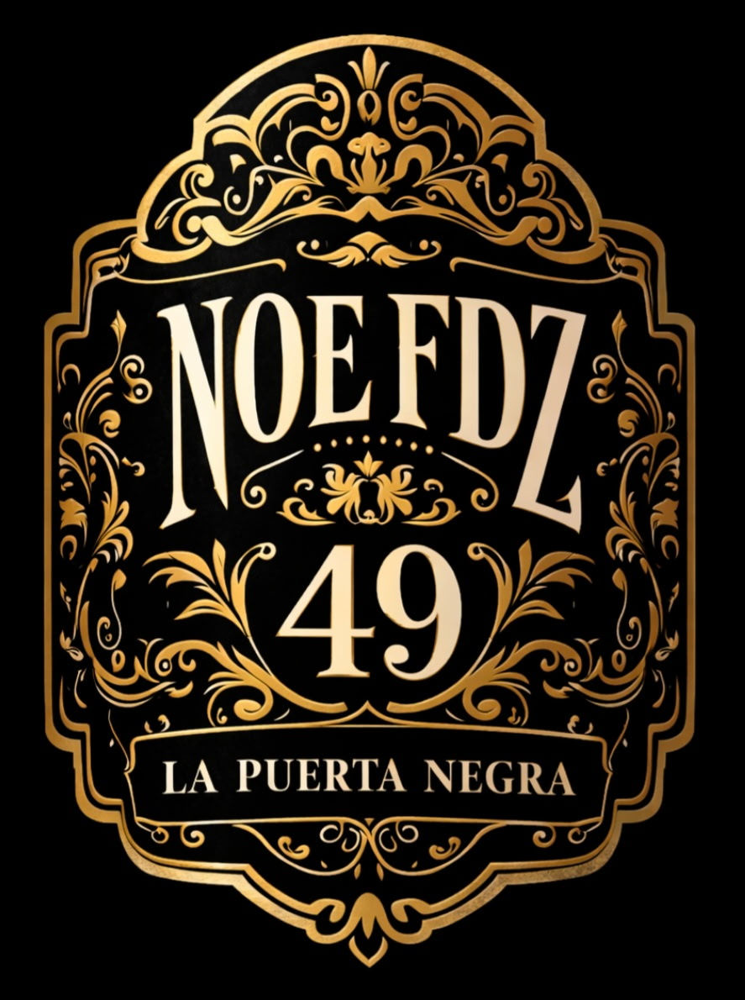
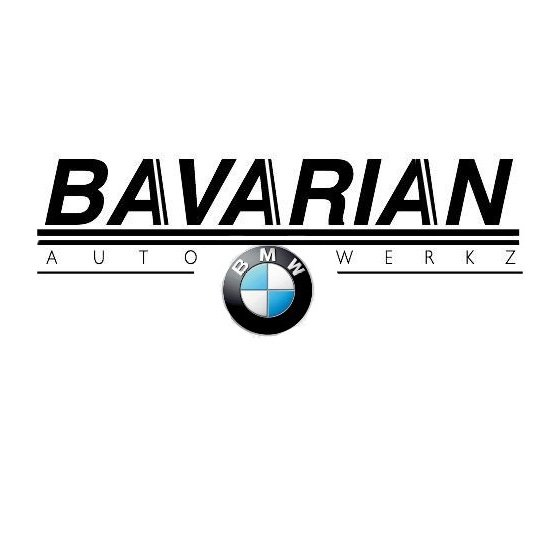
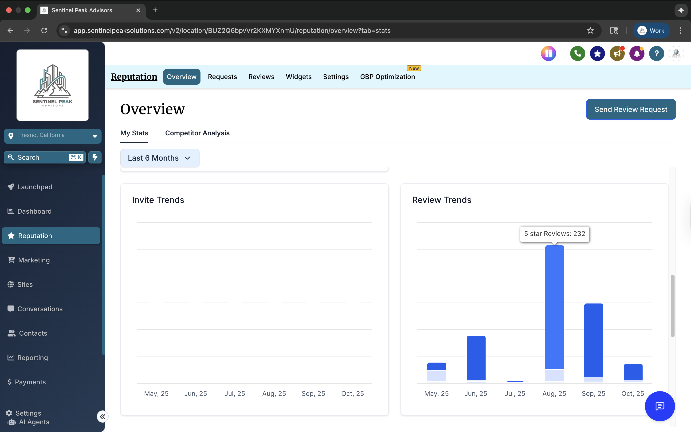
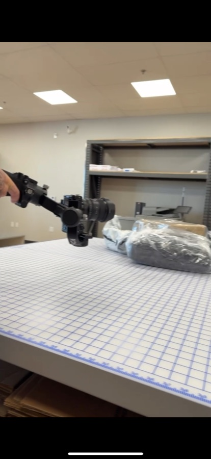
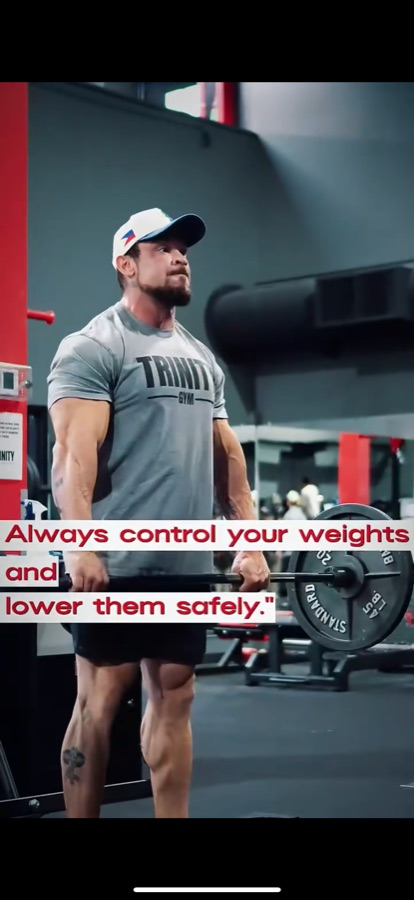

A selection of projects we've delivered, from full websites and branding to custom tools and social media content analysis. Where a site is live, we've linked it so you can see the work for yourself.
Each project below reflects the specific scope of work we delivered. Some were one-time engagements rather than ongoing partnerships.
Posting regularly but unsure which content actually moved the needle, and no clear way to know what to create next.
We ran their social presence through our Viral Content Analyzer, breaking down what was performing in their space and why. From that, we built a data-backed content plan focused on the formats and topics most likely to land with their audience.
A clear, repeatable content direction grounded in real engagement data instead of guesswork, so every post starts from what's proven to work.

A premium cigar brand that needed an online presence as refined as the product, one that conveyed craft and quality from the first click.
We designed and built a full website and shaped the brand identity around it: visual style, tone, and layout that positions the business as a premium name and makes it easy for customers to explore and connect.
A polished, mobile-ready site with a cohesive brand that gives the business a professional home online and room to grow.
An automotive specialist that needed a professional website, plus a practical tool their customers could actually use, not just marketing pages.
We built their website and developed a custom ethanol calculator tailored to their customers' needs: a genuinely useful, interactive tool that sets them apart from competitors and keeps visitors on the site.
A credible, modern website with a one-of-a-kind feature that turns a simple visit into a reason to come back.

A vehicle wrap shop in a visual, image-driven business that needed a website bold enough to match their work and clear enough to drive inquiries.
We created a striking, conversion-focused website that showcases their wraps, communicates the service clearly, and makes it easy for customers to get in touch and request a quote.
A professional online presence that reflects the quality of their work and turns visitors into leads.
Reviews were coming in steadily, but nobody had time to read through them for patterns, let alone respond to each one.
We set up automated review tracking and used intelligence-backed data to summarize sentiment and recurring themes, so leadership could see what customers were actually saying without digging through dozens of posts.
A clear, ongoing picture of reputation trends, with issues surfaced early instead of buried in a feed.



Two very different local businesses, a shipping and printing retailer, and a fitness studio, both needed content that actually looked professional on social, without hiring a full production crew.
We shot and edited short-form video built for how each business actually shows up to customers: one grounded in everyday service, the other in energy and community.
Real, usable video content each business could point to and post, a starting point for building this into an ongoing content plan.
Whether you need a new website, a stronger brand, better content, or a custom tool built just for you. Tell us the goal and we'll show you how we'd get there.